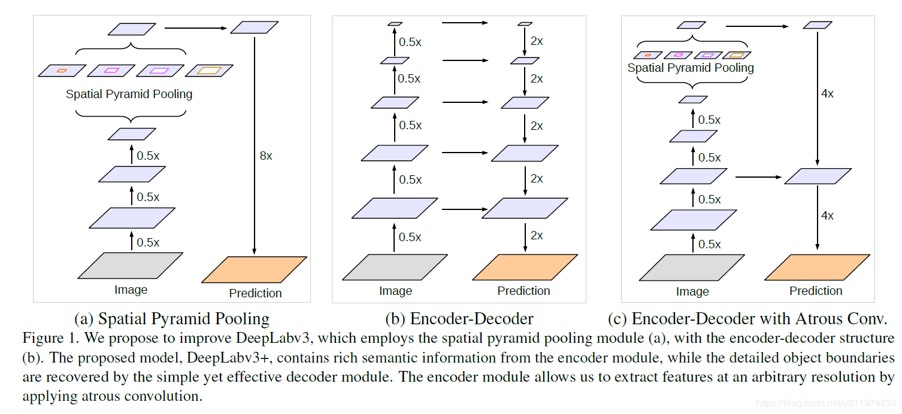
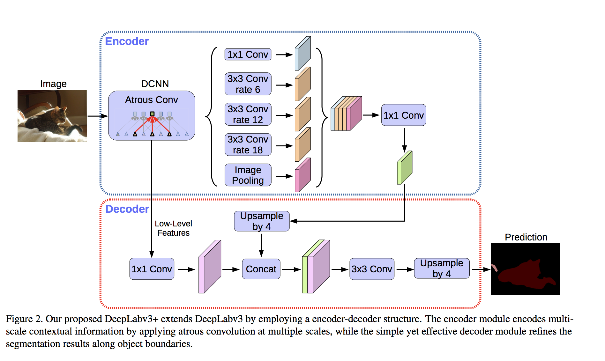

本篇论文是由谷歌公司的Liang-Chieh Chen, Yukun Zhu, George Papandreou, Florian Schroff, and Hartwig Adam所作的Encoder-Decoder with Atrous Separable Convolution for Semantic Image Segmentation
Abstract
深度神经网络采用空间金字塔汇聚模块或编码解码器结构进行语义分割。前者通过lter探测输入特征或以多速率、多视角汇聚操作来编码多尺度上下文信息，后者通过逐步恢复空间信息来捕捉更清晰的对象边界。在这项工作中，我们建议结合这两种方法的优点。特别地，我们提出的模型DeepLabv3+扩展了DeepLabv3，增加了一个简单但有效的解码器模块，尤其是沿着目标边界的分割结果。我们进一步探讨了Xception模型，并将深度可分离卷积应用于无源空间金字塔池和解码器模块中，得到了一个更快、更强的编解码器网络。我们在PASCAL VOC 2012和Cityscapes数据集上验证了该模型的有效性，无需任何后处理，测试集性能分别达到89.0%和82.1%。
Introduction
语义分割是计算机视觉的基本课题之一，其目的是为图像中的每个像素分配语义标签[1,2,3,4,5]。基于全卷积神经的深度卷积神经网络[6,7,8,9,10]网络[8,11]在基准测试任务上比依赖手工特性[12,13,14,15,16,17]的系统有显著的改进。在这项工作中,我们考虑两种类型的神经网络,使用空间金字塔池模块(18、19、20)或encoder-decoder结构(21、22)语义分割,在前一个捕捉丰富的上下文信息,通过集中特性dierent resolu,而后者是能够获得锋利的物体边界。
为了在多个尺度上捕获上下文信息，DeepLabv3[23]应用了几种不同速率的并行无源卷积(ASPP)。PSPNet[24]则在不同的网格尺度上执行池操作。尽管在最后一个feature map中编码了丰富的语义信息，但是由于在网络主干中跨操作池或卷积，与对象边界相关的详细信息丢失了。这可以通过应用atrous卷积来提取更密集的特征图来缓解。然而，给出了最先进的神经网络设计[7、9、10、25、26]由于GPU内存有限，在计算上无法导出比输入分辨率小8倍甚至4倍的输出特征图。以ResNet-101[25]为例，当应用一阶卷积提取比输入分辨率小16倍的输出特征时，必须对最后3个剩余块(9层)内的特征进行扩展。更糟糕的是，如果输出特性是，那么将会有26个剩余块(78层!比输入小8倍。因此，如果为这种类型的模型提取更密集的输出特征，则计算量会更大。另一方面，编码器-解码器模型[21,22]在编码器路径上具有更快的计算速度(因为没有任何特征被放大)，并且在解码器路径上逐渐恢复清晰的对象边界。为了将两种方法的优点结合起来，我们提出了利用多尺度上下文信息来丰富编解码器网络中的编码模块。
特别是，我们提出的模型DeepLabv3+扩展了DeepLabv3通过添加一个简单但有效的解码器模块来恢复对象绑定，如图1所示。在DeepLabv3的输出中编码了丰富的语义信息，并根据计算资源的预算，利用卷积控制编码器特性的密度。此外，解码器模块允许详细的对象边界恢复。
对于语义分割任务，将atrous可分离卷积应用于ASPP和解码器模块。最后，我们在PASCAL VOC 2012和Cityscapes数据上验证了该模型的有效性，在不进行任何后处理的情况下，测试集性能分别达到89.0%和82.1%，设置了一个新的最新型。
总之，我们的贡献如下：
- 提出了一种新颖的编解码器结构，该结构采用DeepLabv3作为一个功能强大的编解码器模块和一个简单有效的解码器模块。
- 在我们提出的encoder-decoder架构中，可通过扩张卷积直接控制提取encoder特征的分辨率，用于平衡精度和运行时间.
- 我们将Xception模型应用于分割任务中，并将深度可分卷积应用于ASPP模块和解码器模块中，得到了一个更快、更强的编解码器网络。
- 模型达到了新的state-of-the-art，同时我们给出了模型设计分析细节和模型变体.
- 开源代码https://github.com/tensorflow/models/tree/master/research/deeplab.
基于全卷积网络(FCNs)的模型[8,11]在多个分割基准上都有显著的改进[1,2,3,4,5]。有几个模型变体被提议利用上下文信息进行分割[12、13、14、15、16、17、32、33]，包括那些使用多尺度输入(即，图像金字塔)[34,35,36,37,38,39]或采用概率图形模型(如带有特定推理算法[41]的DenseCRF[40])[42,43,44,37,45,46,47,48,49,50,51,39]。在本工作中，我们主要讨论了使用空间金字塔池和编解码器结构的模型。
空间金字塔池:PSPNet[24]或DeepLab[39,23]等模型在多个网格尺度(包括图像级池[52])上执行空间金字塔池[18,19]，或应用多个与不同速率并行的atrous卷积(称为atrous空间金字塔池，或ASPP)。这些模型利用多尺度信息在多个分割基准上取得了良好的分割效果。
编解码器:编解码器网络已经成功地应用于许多计算机视觉任务中，包括人体姿态估计[53]、目标检测[54、55、56]、语义分割[11、57、21、22、58、59、60、61、62、63、64]。通常，编解码器网络包含(1)编码器模块，该模块逐渐减少特征映射并捕获更高的语义信息;(2)解码器模块，该模块逐渐恢复空间信息。基于这个想法，我们建议使用DeepLabv3[23]作为编码器模块，并添加一个简单但有效的解码器模块来获得更清晰的分段。
深度可分离卷积:深度可分离卷积[27,28]或组卷积[7,65]，一种强大的运算，在保持性能相似(或稍好)的同时，降低计算成本和参数数量。这种操作在最近的许多神经网络设计中得到了应用
(66、67、26、29、30、31日,68]。我们特别研究了Xception模型[26]，它与[31]类似，用于提交COCO 2017检测挑战赛，在语义分割任务的准确性和速度方面都有了提高。
Methods
在本节中，我们简要介绍了无源卷积[69,70,8,71,42]和深度可分离卷积[27,28,67,26,29]。然后，在讨论附加到编码器输出的解码器模块之前，我们将回顾DeepLabv3[23]，它被用作我们的编码器模块。我们还提出了一个modie Xception模型[26,31]，该模型进一步提高了性能，计算速度更快。
Encoder-Decoder with Atrous Convolution
Atrous convolution: Atrous convolution是一个强大的工具，它可以让我们显式地控制深度卷积神经网络计算的特征的分辨率，并调整lter的eld- view来捕捉多尺度的信息，它概括了标准卷积运算。
深度可分离卷积:深度可分离卷积，将标准卷积分解为深度卷积，然后是点卷积。大大降低了计算的并发性。具体来说，深度卷积对每个输入通道独立地执行空间卷积，而点态卷积用于组合深度卷积的输出。在TensorFlow[72]实现深度可分离卷积时，深度卷积(即，空间卷积)，如图3所示。在本文中，我们将所得的卷积称为atrous可分卷积，发现atrous可分卷积在保持相似(或更好)性能的同时，显著降低了模型的计算复杂度。
DeepLabv3作为编码器:DeepLabv3[23]采用atrous convolution[69,70,8,71]提取深度卷积神经网络任意分辨率下计算的特征。这里，我们将输出步长表示为输入图像空间分辨率与最终输出分辨率的比值(在全局池或全连接层之前)。对于图像分类任务，最终的feature map的空间分辨率通常是输入图像分辨率的32倍，因此输出stride = 32。语义分割的任务,一个可以采用输出步= 16(或8)密度特征提取的大步在最后一个(或两个)应用卷积深黑色的块(s)和相应的(例如,我们运用率= 2和率= 4最后两块分别输出步= 8)。此外,DeepLabv3增加深黑色的空间金字塔池模块,该探测器在多个尺度上通过应用卷积特性深黑色的卷积dierent利率,具有图像级功能[52]。我们使用登录到原始DeepLabv3之前的最后一个feature map作为我们所提议的编解码器结构中的编码器输出。注意编码器输出特征图包含256个通道和丰富的语义信息。此外，还可以根据计算预算，利用无阶卷积提取任意分辨率的特征。
解码器建议:DeepLabv3的编码器特性通常以输出步长= 16计算。在[23]的工作中，特征是双线性提前采样的16倍，这可以认为是一个幼稚的解码器模块。然而，这个简单的解码器模块可能无法成功地恢复对象分割细节。因此，我们提出了一个简单而有效的解码器模块，如图2所示。编码器的特征首先是bilinearly向上采样4倍，然后与具有相同空间分辨率的网络主干中相应的低层特征[73]连接(例如，在ResNet-101[25]中跨行之前Conv2)。我们应用另一个1卷积的低级功能来减少渠道的数量,因为相应的低级功能通常包含大量的渠道(例如,256或512)可能超过丰富的编码器特性的重要性在我们的模型中(只有256个频道)和训练的难度。在连接之后，我们应用一些3x3卷积来细化这些特性，然后再进行一个简单的双线性上采样，采样倍数为4。在第4节中，我们展示了对编码器模块使用output stride = 16在速度和精度之间取得最佳折衷。当为编码器模块使用output stride = 8时，性能略有提高，但代价是增加了额外的计算复杂度。
Modified Aligned Xception
Xception模型[26]在ImageNet上显示了很好的图像分类结果[74]，计算速度很快。最近，MSRA团队[31]修改了Xception模型(称为Aligned Xception)，并进一步提高了对象检测任务中的性能。在这些发现的激励下，我们朝着同一个方向努力，将Xception模型应用于语义图像分割任务。特别是,我们作一些修改在同行的修改,即(1)深入Xception[31]除了一样,我们不修改条目噢网络结构的快速计算和内存效率,(2)所有马克斯池操作都被切除分离卷积大步,这使我们能够应用Atrous的分离卷积来提取任意分辨率特征图(另一个选择是深黑色的算法扩展到最大池操作),(3)每3次深度卷积后，添加额外的批量归一化[75]和ReLU激活，类似于MobileNet设计的[29]。详见图4。
Experimental Evaluation
我们使用ImageNet-1k[74]预训练的ResNet-101[25]或修改的对齐的Xception[26,31]来通过atrous convolution提取稠密的feature map。我们的实现基于TensorFlow[72]，并且公开可用。
在PASCAL VOC 2012语义分割基准[1]上对提出的模型进行了评价，其中包含20个前景对象类和一个背景类。原始数据集包含1;464(火车),1,449 (val)， 1,456(测试)像素级带注释的图像。我们通过[76]提供的额外注释来扩充数据集，结果是10,582 (trainaug)训练图像。性能是通过21个类(mIOU)的像素交叉-过并集平均来衡量的。
我们遵循与[23]相同的培训协议，并将详细信息介绍给感兴趣的读者。简而言之，我们采用相同的学习进度计划(即“poly”[52]相同的初始学习率0.007),作物面积513 513,微调批标准化参数[75]当输出步长= 16，增加的规模和随机数据在训练期间。注意，我们还在建议的解码器模块中包含了批处理规范化参数。我们提出的模型是端到端训练的，没有对每个组件进行分段预训练。
Decoder Design Choices
我们将“DeepLabv3 feature map”定义为DeepLabv3计算的最后一个feature map(即，包含ASPP特征和图像级特征的特征)，以及[kxk;f]作为与核kxk和f滤波器的卷积运算。
当使用output stride = 16时，基于ResNet-101的DeepLabv3[23]在训练和评估期间对logits进行了双线性上采样，采样值为16。这种简单的双线性上采样可以看作是一种朴素解码器设计，在PASCAL VOC 2012 val set上实现了77:21%的[23]性能，比训练中不使用这种朴素解码器(即，在培训期间向下采样groundtruth)。为了改进这个原始基线，我们提出的模型\DeepLabv3+”在编码器输出之上添加了解码器模块，如图2所示。译码器模块,我们考虑三个地方不同符号的选择,即(1)11卷积用来减少渠道的低级功能映射从编码器模块,(2)3x3卷积用于获得更清晰的分割结果,和(3)编码器应该使用低级别的功能。
为了评估1x1卷积在解码器模块中的效果，我们使用[3x3,256]和ResNet-101网络骨干网的Conv2特性，即， res2x残差块中的最后一个feature map(具体来说，我们在跨行之前使用feature map)。如表1所示，将低层feature map的通道从编码器模块减少到48或32，可以获得更好的性能。因此，我们采用[1x1,48]用于信道缩减。
然后我们设计了解码器模块的3x3卷积结构，并在表2中报告了结果。我们发现，在将Conv2 feature map(跨行之前)与DeepLabv3 feature map连接起来之后，使用两个3x3卷积和256个过滤器比使用一个或三个卷积更有效。将过滤器的数量从256更改为128或内核大小从3x3更改为1x1会降低性能。我们还在解码器模块中同时使用了Conv2和Conv3特征图的情况下进行了实验。在这种情况下，解码器feature map逐步向上采样2，先与Conv3连接，再与Conv2连接，通过[3x3,256]操作对每个特征图进行细化。整个解码过程类似于U-Net/SegNet的设计[21,22]。然而，我们没有看到明显的改善。因此，在最后，我们采用了非常简单但有效的解码器模块:DeepLabv3 feature map和信道约简的Conv2 feature map的连接由两个[3x3,256]操作重新命名。注意，我们提出的DeepLabv3+模型的输出步长为4。我们不追求更密集的输出特性图(即，在GPU资源有限的情况下，输出步长<4)。
ResNet-101 as Network Backbone
为了比较模型的精度和速度，我们在表3中报告了在提议的DeepLabv3+模型中使用ResNet-101[25]作为网络骨干时的mIOU和乘法-加法。多亏了atrous卷积，能够在培训和评估过程中使用单个模型获得不同分辨率的特征。
基线：表3中的行块包含来自[23]的结果，显示在计算期间提取更密集的特征图(即， eval输出步长=8采用多尺度输入可以提高性能。此外，添加左-右ip输入使计算复杂度增加了一倍，而性能仅略有改善。
添加解码器:表3中的第二行块包含采用所提议的解码器结构时的结果。性能从使用eval output stride = 16或8时，分别为77.21%到78.85%或78.51%到79.35%，计算开销约为20B。当使用多尺度和左右输入时，性能得到了进一步的提高。
更粗的特征图:当使用训练输出步长= 32(即，训练过程中完全没有无效卷积)，用于快速计算。如表3第三行代码块所示，添加解码器的性能提高了2%左右，而只需要增加74.20B的倍数即可。然而，在我们使用火车输出步长= 16和不同的eval输出步长值的情况下，性能总是比实际情况低1%到1.5%。因此，我们更喜欢在培训或评估期间使用output stride = 16或8，这取决于复杂性预算。
Xception as Network Backbone
我们进一步采用更强大的Xception[26]作为网络主干。对于[31]，我们做了更多的修改，如第3.2节所述。
ImageNet预处理:提出的Xception网络是在ImageNet-1k dataset上进行预处理[74]，在[26]中使用了类似的训练协议。具体采用Nesterov动量优化器，动量= 0.9，初始学习率= 0.05，速率衰减率= 0.94 / 2个周期，权值衰减率4e5。我们使用50个GPU的异步训练，每个GPU的批处理大小为32，图像大小为299299。我们并没有对超参数进行严格的调整，因为我们的目标是在ImageNet上对模型进行语义分割的预训练。我们报告了表4中验证集的单模型错误率，以及在相同训练协议下再现的基线ResNet-101[25]。我们观察到，在改进的Xception中，每次3 3个深度卷积后，不添加额外的批处理归一化和ReLU时，Top1和Top5的准确率分别下降了0.75%和0.29%。
将提出的Xception作为网络主干进行语义分割的结果如表5所示。
Improvement along Object Boundaries
在本小节中，我们通过trimap实验[14,40,39]对分割精度进行评估，以量化提出的解码器模块在目标边界附近的精度。具体来说，我们对val集合上的“void”标签注释应用形态学扩展，这通常发生在对象边界附近。然后，我们计算那些在扩展带内的像素的平均借据(称为trimap)的“void”标签。如图5 (a)所示，对于ResNet-101[25]和Xception[26]网络骨干，与单纯的双线性上采样相比，采用该解码器提高了性能。当扩张带较窄时，改善更为明显。我们观察到ResNet-101和Xception在最小trimap宽度时mIOU分别有4.8%和5.4%的改善，如图所示。我们还在图5 (b)中可视化了使用该解码器的效果。
Experimental Results on Cityscapes
Conclusion
我们提出的模型\DeepLabv3+”采用编解码器结构使用DeepLabv3对丰富的上下文信息进行编码，采用简单而有效的解码器模块恢复对象边界。根据可用的计算资源，还可以应用无源卷积以任意分辨率提取编码器的特性。同时，我们还研究了Xception模型和atrous可分离卷积，使所提出的模型更快、更强。最后，我们的实验结果表明，提出的模型设置了一个新的最先进的性能.
收获
DeeplabV3+空间金字塔模块和encoder-decoder结构做语义分割，DeeplabV3+的基础结构如下图所示

encoder部分使用DeeplabV3。decoder部分由两部分组成，一是encoder输出部分进行4倍上采样，二是encoder部分4倍下采样的层使用1x1卷积降通道。将上述两部分连接，再卷积后4倍上采样得到结果。
- 在原先的DeepLabv3中，取预测的feature直接双线性上采样16倍到期望尺寸，这样的简易的decoder模块不能成功的恢复分割细节.
- 空间金字塔模块，使得模型可以在不同的分辨率上进行池化。
- 在输入feature上应用多采样率扩张卷积获取多尺度上下文信息。
体会
整个模型结构如下图：

由上图可以看出来，整个Deeplabv3+的结构中Encoder非常复杂，使用了DCNN、空洞卷积。而Decoder部分，只将最开始的部分降通道后提取低级特征，将Encoder提取的高级特征4倍上采样后两者相融合卷积后上采样输出。
探索使用改进的Xception
加深Xception结构。将空洞卷积和Depthwise separable convolution结合，在每个3×3的深度卷积后增加Batch Normalization层和ReLU,将其作为encodet网络主体，替换原本DeepLabv3的ResNet101.